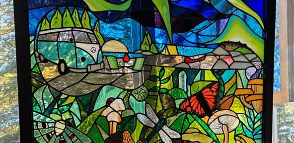
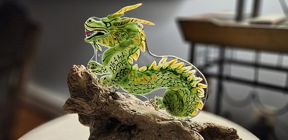
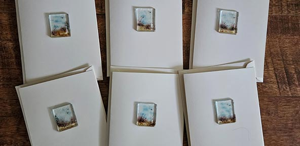
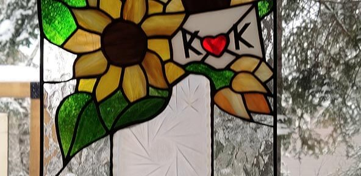

Studio 62 Evelyn Falk
Krista Gibson is inspired by the nature of Lake Winnipeg and likes to create art with glass and other local materials. Her art has no boundaries. She creates stained glass panels and even includes vintage dishes, bringing new life to the past, or fused glass landscapes with a birchbark setting.
Krista fell in love with glass as an art form just over six years ago. It began with a few evening classes on the medium to help drive away the winter blues, but after creating her first few pieces, she was hooked! With her love to draw and create something different and unique each time.
Krista's favorite creations include a backlit sunset beach ukelele; a cross-country skier in a snowshoe frame; and upcycled vintage candy and pickle dishes to create something truly distinctive. Saving every scrap of glass from her creations, Krista repurposes these for ornaments, greeting cards and mosaics on upcycled doors and windows.


Stained Glass ❯
Fused Glass ❯
Greeting Cards ❯
Upcycled Vintage ❯